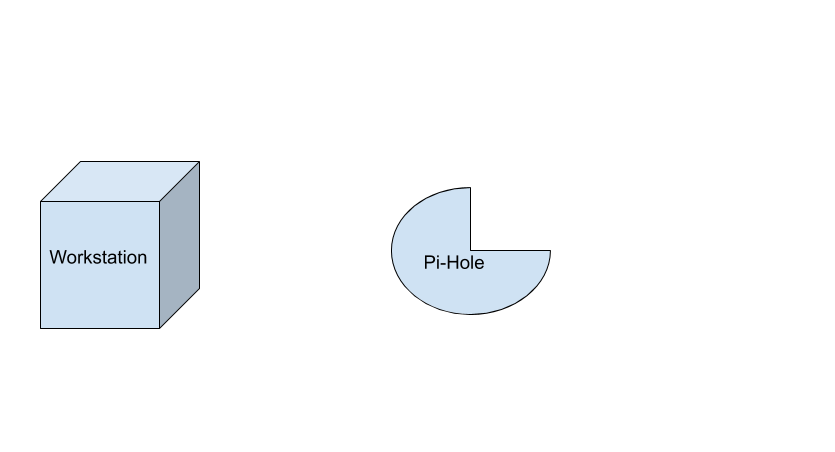

PI-hole PrIvacy:
TamperIng Is a Good ThIng
JunIor TIdalCIty UnIversIty of New York Chad ClarkHIghland Park PublIc LIbrary Bryan NeIl JonesNashvIlle PublIc LIbraryPrIvacy
What are our hopes?
What are our challenges?

malware / phishing / doxing


dark patterns


future vIsIons / escape routes
FacIal recognItIon bans
User space FLOSS
Non-commercIal decentralIzed Internet
What Is PI-hole?
What does PI-hole do?
PI-hole blocks ad querIes.
PI-hole Is a DNS server.
How does It work?
How does It work?
How does It work?
How does It work?
Hands-on actIvIty:
Raspberry PI Zero W connected to the Internet
RaspbIan Buster LIte Installed on mIcroSD card
USB power supply
Smart router
Laptop to Interface with RPI-Zero
InstallIng PI-hole
1) Boot up Raspberry PI
2) SSH Into Raspberry PI
(user: pi | password: raspberry)
3) Type: curl -sSL https://install.pi-hole.net | bash
ConfIgure
Select DNS upstream
Select IPv4 or IPv6
ConfIgure IP address(self-assIgned--thIs works most of the tIme)
Install web Interface
Keep admIn password
Test PI-hole
Go to:
http://[your raspberry pI's IP]/admin
UsIng PI-hole
Change the DNS server on your devIce to the IP address of PI-hole
OR Update the DNS server on your router to the IP address of the PI-hole
THEN VIsIt a websIte
WrappIng Up
LIbrarIes can use PI-hole to protect patron prIvacy by blocking Internet ads, trackIng, and mal-ware.
It can reduce bandwIdth because It Is not loadIng ads.
It can block ads on many devIces at once IncludIng phones and TVs.
Q & A
Resources
ACLU (2019, Jun. 3) Coalition letter calling for a federal moratorium on face recognition. ACLU. Retrieved from https://www.aclu.org/letter/coalition-letter-calling-federal-moratorium-face-recognition
Beadon, L. (Producer). (2019, Dec. 3). Techdirt podcast episode 233: Your secret consumer score [Audio podcast]. https://www.techdirt.com/articles/20191203/12402743497/techdirt-podcast-episode-233-your-secret-consumer-score.shtml.
Cox, J. and Koebler, J. (2019, Dec. 19).Inside the podcast that hacks Ring camera owners live on air. Vice, Retrieved from https://www.vice.com/en_us/article/z3bbq4/podcast-livestreams-hacked-ring-cameras-nulledcast.
Glass, E.R. (2019, Nov. 1). Open access in an age of surveillance technology. [Blog post]. Retrived from https://www.erinroseglass.com/open-access-in-an-age-of-surveillance-technology/.
Hardesty, L. (2018, Feb. 11). Study finds gender and skin-type bias in commercial artificial-intelligence systems. MIT News, Retrieved from https://news.mit.edu/2018/study-finds-gender-skin-type-bias-artificial-intelligence-systems-0212.
Resources ContInued
Hill, K. (2020, Jan. 18). The secretive company that might end privacy as we know it. New York Times, Retrieved from https://www.nytimes.com/2020/01/18/technology/clearview-privacy-facial-recognition.html.
Hill, K. (2019, Nov. 4). I got access to my secret consumer score. now you can get yours, too. New York Times, Retrieved from https://www.nytimes.com/2019/11/04/business/secret-consumer-score-access.html
King, E. (2019, Dec. 4). Chicago cops use social media to track grieving families of gunshot victims. Medium. Retrieved from https://onezero.medium.com/chicago-cops-use-social-media-to-track-grieving-families-of-gunshot-victims-e68e5a6dc40c
lady ada (2017, Aug. 15). Install Pi Hole. Adafruit. Retrieved from https://learn.adafruit.com/pi-hole-ad-blocker-with-pi-zero-w/install-pi-hole
Mac, R., Haskins C., and McDonald, L. (2020, Feb. 27). Clearview’s facial recognition app has been used by the Justice Department, ICE, Macy’s, Walmart, and the NBA. Buzzfeed. Retrieved from https://www.buzzfeednews.com/amphtml/ryanmac/clearview-ai-fbi-ice-global-law-enforcement
Resources ContInued
Simonite, and T. Barber, G. (2019, Oct. 17). The delicate ethics of using facial recognition in schools. Wired, Retrieved from https://www.wired.com/story/delicate-ethics-facial-recognition-schools/.
Zuboff, S. (2019). The age of surveillance capitalism. PublicAffairs.
Resources ContInued
Simonite, and T. Barber, G. (2019, Oct. 17). The delicate ethics of using facial recognition in schools. Wired, Retrieved from https://www.wired.com/story/delicate-ethics-facial-recognition-schools/.
Zuboff, S. (2019). The age of surveillance capitalism. PublicAffairs.